别看了别看了，这不是我做的
^^^ By ChenPi12.
在线安装 手动安装包
QQ交流群：13016712
编程说明书
游戏教学视频
入门教学视频 ASCII码表
极语言简介
1.启动软件

打开软件默认是“新建”选项，点击初级程序。进入主界面。
例题一：初级程序
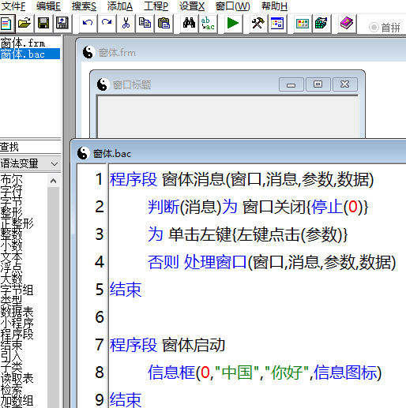
点击编译（菜单栏下方有个绿色的三角符号）
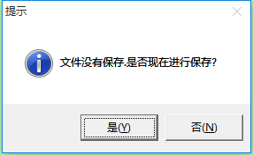
提示文件没有保存，需要给程序起一个名字。我们点“是”
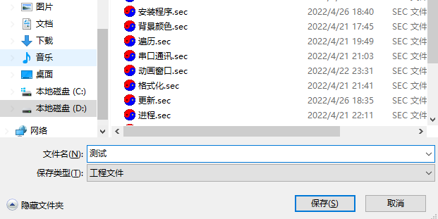
随便起一个名字，就叫“测试”好了。
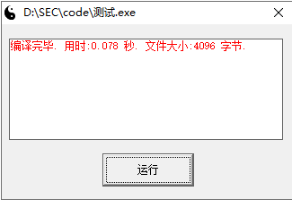
程序已经编译完成，我们点击“执行”按钮
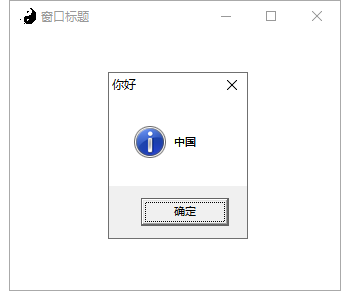
运行的程序会弹出提示，这样一个程序就写好了，默认是在code目录下。
2.窗体设计
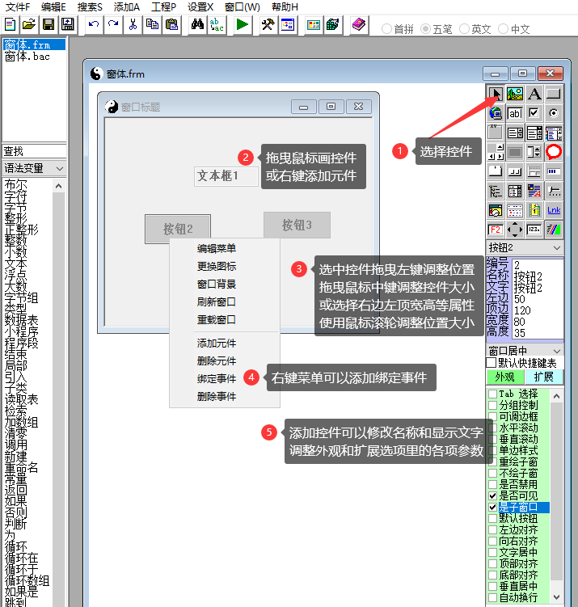
刚才我们学习的是代码的编写，那么设计带窗体的程序，最重要的是先学会如何设计窗体。
我们可以关闭代码编辑窗口，以后可以双击左侧列表里的窗体.bac，来重新打开代码编辑。
然后点击此控件，左侧控件下方的属性列表里，双击可以修改它的属性和风格样式等。
窗体设计界面默认打开时显示有点小，可以拖拉窗口边缘使之放大，或者可以最大化窗口
3.编写一个程序

例题二：显示网页
然后点击编译按钮。如果没有保存工程，会提示你保存工程文件。输入要保存的文件名。
程序会自动编译你设计的软件，并自动运行，运行后效果如下。
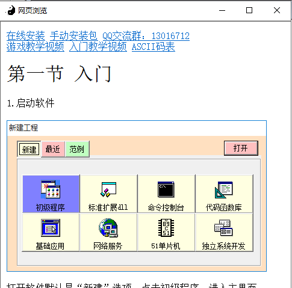
例题三：窗口最大化
设计的主窗口和网页框都有点小，如何实现最大化？
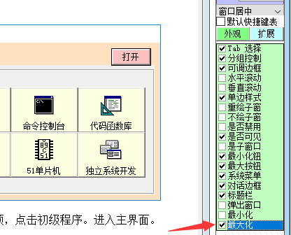
设计界面选中主窗体，外观选项里选中最大化
这样窗体在启动的时候就会自动最大化了，然后再把下面代码，插入到“窗体启动”的下面。
移动窗口(网页,0,0,桌面.宽,桌面.高,假);
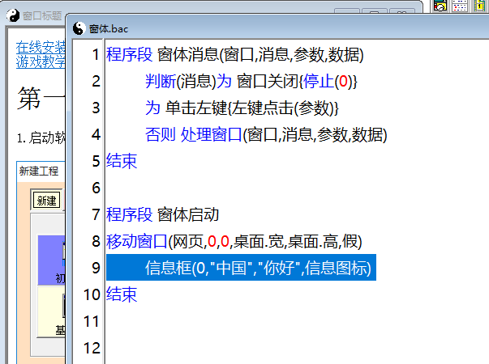
"移动窗口"是一个系统函数，后面会有说明，这里先简单介绍下如何使用。
作用：移动一个窗口到指定位置和大小。相应参数：(窗口句柄, 左边, 顶部, 宽度, 高度, 重绘);
窗口句柄就是网页了，我们要移动它，左边距和顶边距都设置为0。
其宽度和高度就取桌面的宽度和高度。是否重绘写假或者0就可以了
最后再把自动添加的弹出信息框代码删除掉，编译运行就是最大化
4.菜单设计
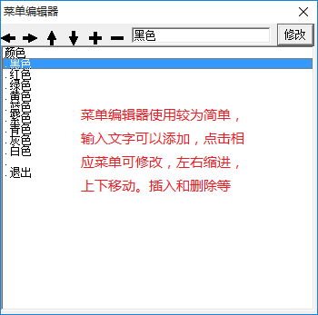
例题四：使用菜单
菜单怎么用呢？在窗体设计界面点击鼠标右键，选择“菜单设计”
依次添加：主菜单、显示、隐藏这三个项目。然后再选中显示，点击一下“右移”按钮，“隐藏”也同上操作。
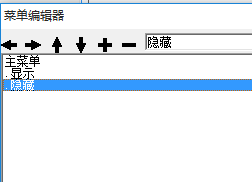
菜单通常都是先点一级菜单，再点二级菜单。
“主菜单”就是一级菜单，显示和隐藏是它的二级菜单。（多一个点就低了一级）
双击二级菜单，也就是显示和隐藏这两个菜单项，弹出添加事件的窗口。
设计器会自动生成绑定事件的名称，这个名称也可以自由更改。
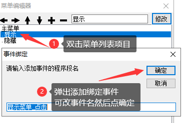
给显示和隐藏这两个菜单都添加绑定的事件之后。
代码窗口（窗体.bac）里面会自动添加两个程序段。
在“显示菜单_点击”这段程序里添加“显隐窗口(网页,窗口显示)”
在“隐藏菜单_点击”这段程序里添加“显隐窗口(网页,窗口隐藏)”
这样就可以通过点击菜单去控制网页的显示和隐藏了。
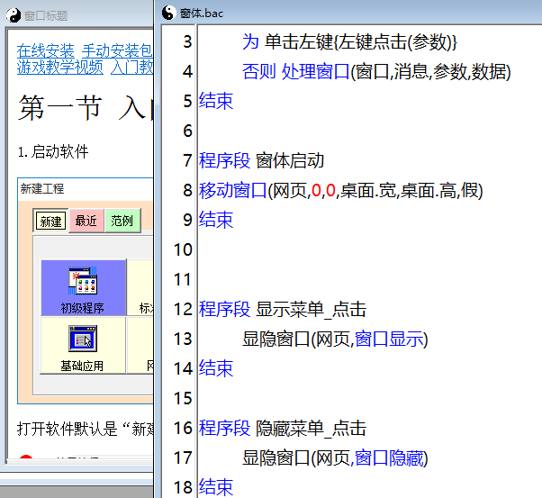
另外再补充一点，网页框的水平滚动和垂直滚动选项要勾选一下
这样才可以使用鼠标滚轮上下翻页和滚动条左右滚动了。
5.查看示例
点击新建工程，并点击选项卡的范例，选择左侧列表里的示例文件，点击打开
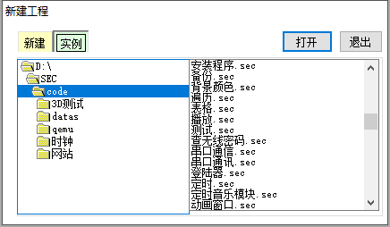
打开时默认只显示一个窗口。“工程文件”列表里是有多个的，双击即可打开相应窗口。或者点击“窗口”菜单里相应的名称。
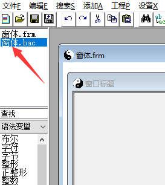
后缀为bac的是代码文件，后缀为frm的为窗体设计。当然两者是可以相互切换的。
6.工程引用
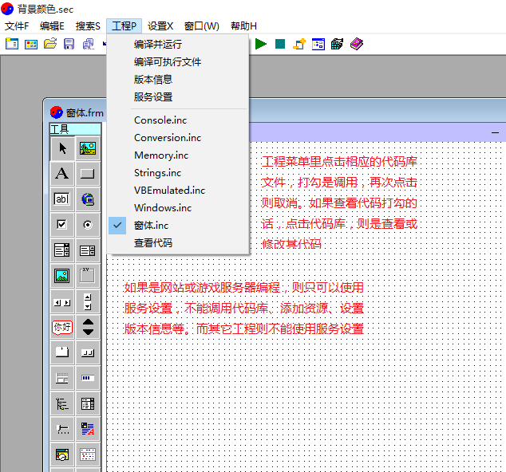
7.版本设置
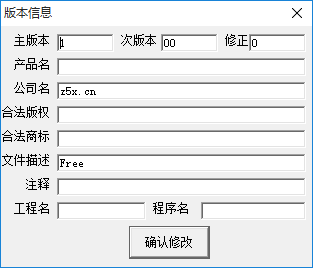
8.服务设置
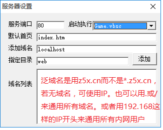
9.添加资源
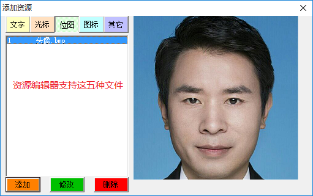
©版权所有 智五煋电子技术开发有限责任公司 豫ICP备18003883号-1